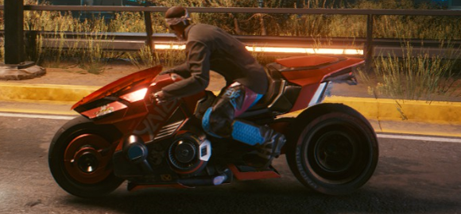

John’s Top 5 Games 2020
5. All of the Resident Evils!
Played through every game available on the PC, RE3 remake officially my favourite entry in the franchise which I accept is not a popular choice.
4. Beautiful Desolation.
Two brothers make their way through a foreign land with their robot dog. It’s an RPG with no stats or combat!
3. Wasteland 3.
In what’s starting to become a trend of sorts, starts strong but has nothing new to offer after the first couple of hours. See The Outer Worlds and RE7.
2. Cyberpunk 2077.
In 2007 CDPR released a broken mess of an RPG but through strong post-launch support managed to build a reputation as a consumer friendly darling. 13 years later, they done fucked it up.
1. The Last Of Us 2.
Affecting despite a story that threads a well worn road. Stuck with me in a way I wasn’t expecting.
John’s Gaming Music Highlights 2020

Cyberpunk Motorbike Riding
Riding through Night City in Cyberpunk on my not-Akira motorbike when this tune comes on
Ellie serenading Dina in The Last Of Us 2
C&C Remastered OST
Being totally unprepared for just how much the C&C Remastered OST rocks -
Wasteland 3
The first time this plays, in-game, in Wasteland 3.
Resident Evil 7
Spooky ass song for a spooky ass game, from RE7.
Control
Actually played it last year but cause Danny beat it recently, two from Control (spoilers) :